- Módulo: Fundamentos de Hardware
- Título del trabajo Raspberry Pi
- Componentes del grupo: Isabel Quintero
- Curso Académico: 2013/2014
- Fecha de entrega: 7 de Mayo de 2014
Después de que el profesor nos entregase todos los materiales necesarios, nos disponemos a la preparación de
para la instalación.
Primero, consultamos la web de la Raspberry Pi para ver los sistemas operativos disponibles para descargar.
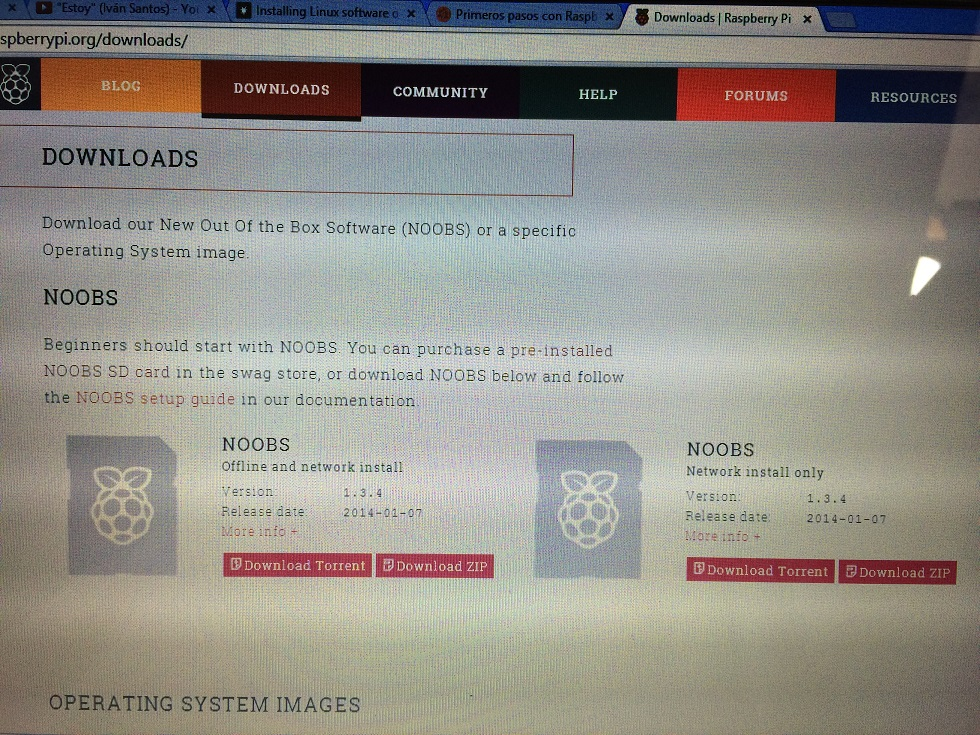
Siguiendo los pasos adecuados, instalamos el sistema operativo recomendado en la tarjeta SD cedida por el profesor, con una
memoria alta para no quedarnos cortos a la hora de su utilización. Para este paso necesitaremos descargar otro aplicación,
"Win32DiskImager"que sirve para escribir archivos de imagen de Ubuntu a tarjetas SD
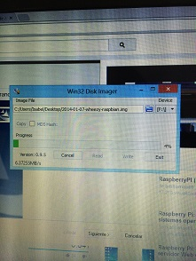
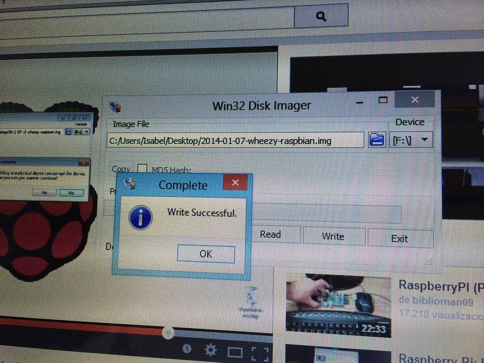
Una vez terminado, nos movemos a la Tele HDMI y conectamos la Raspberry, el teclado y el ratón para terminar del todo la
instalación.
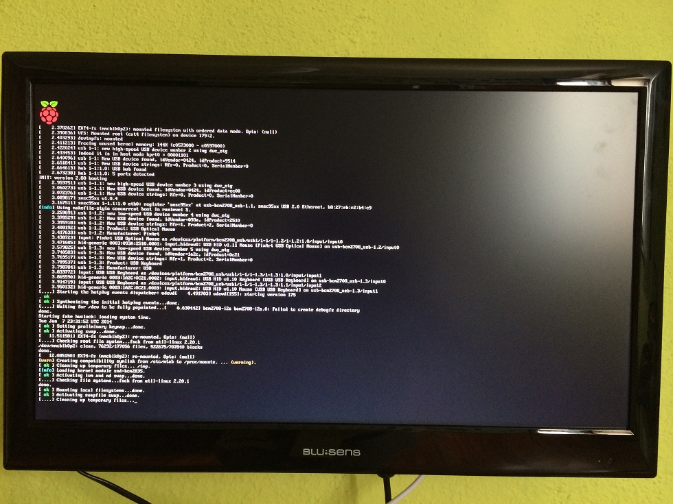
Entramos al sistema y activamos el entorno gráfico para que nos sea mucho más fácil movernos por la
Raspberry Pi.
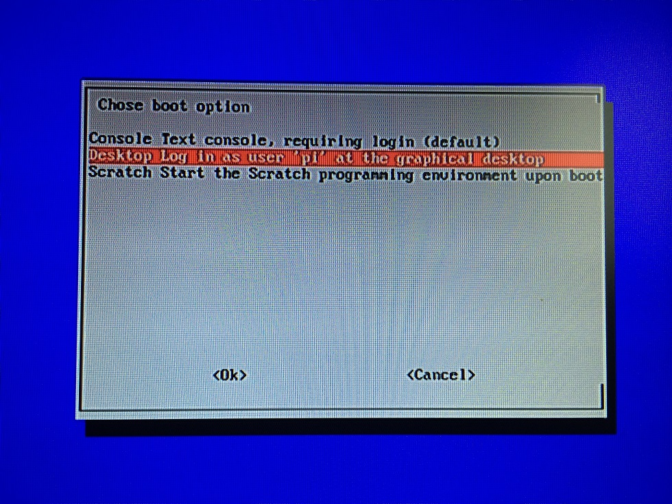
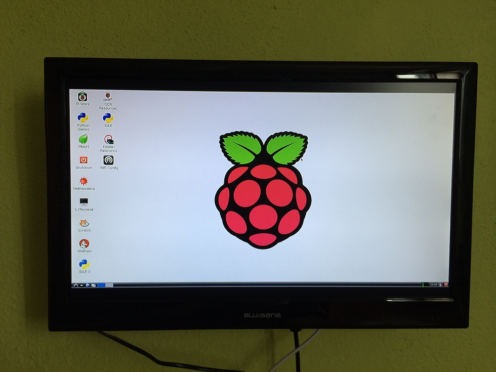
En este punto también podemos crear el usuario "profesor"con su clave y ponerle la clave "profesor"
al usuario por defecto"pi".
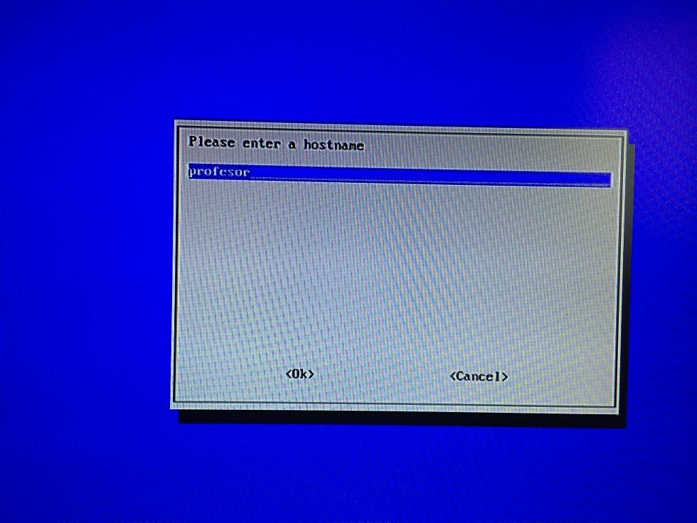
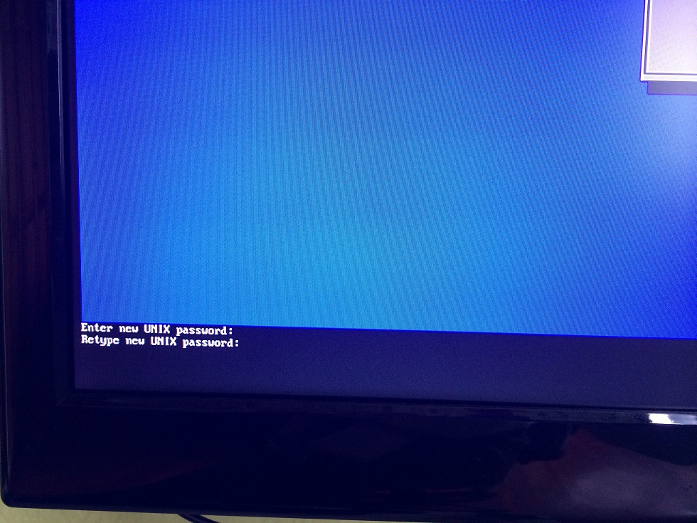
Para confirmar el cambio de contraseña, entramos en la consola y utilizamos el comando "passwd".
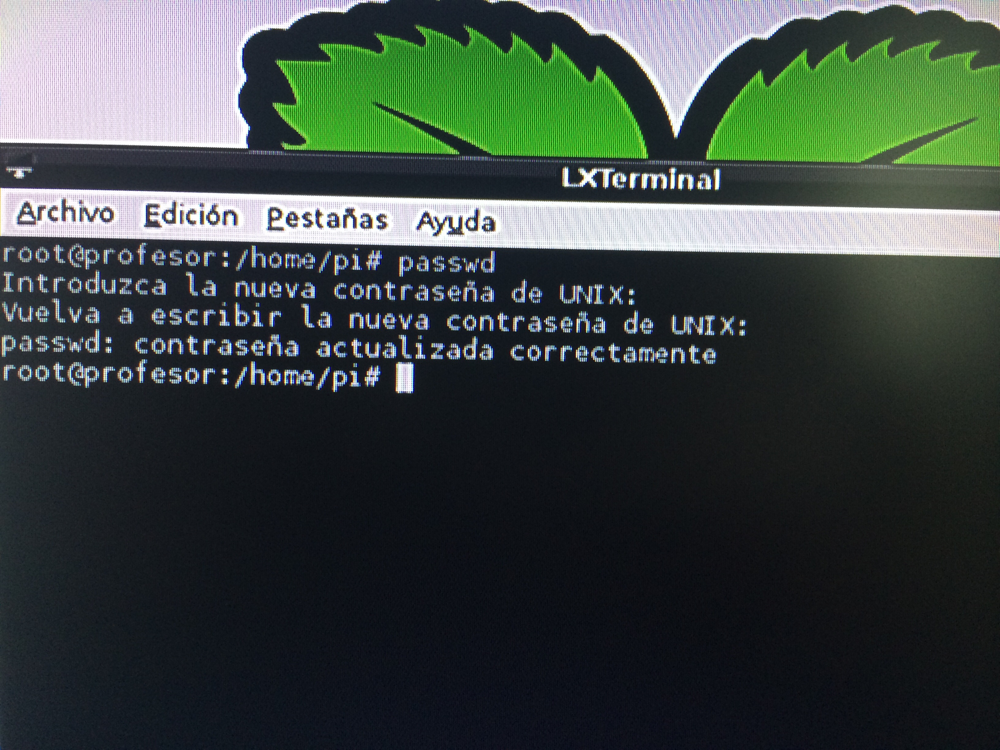
Conseguimos entrar, y nos damos cuenta que el teclado y el sistema operativo estan en inglés, pues lo cambiamos. El SO
a través del comando "sudo dpkg-reconfigure locales" y el teclado "sudo dpkg-reconfigure keyboard-configuration".
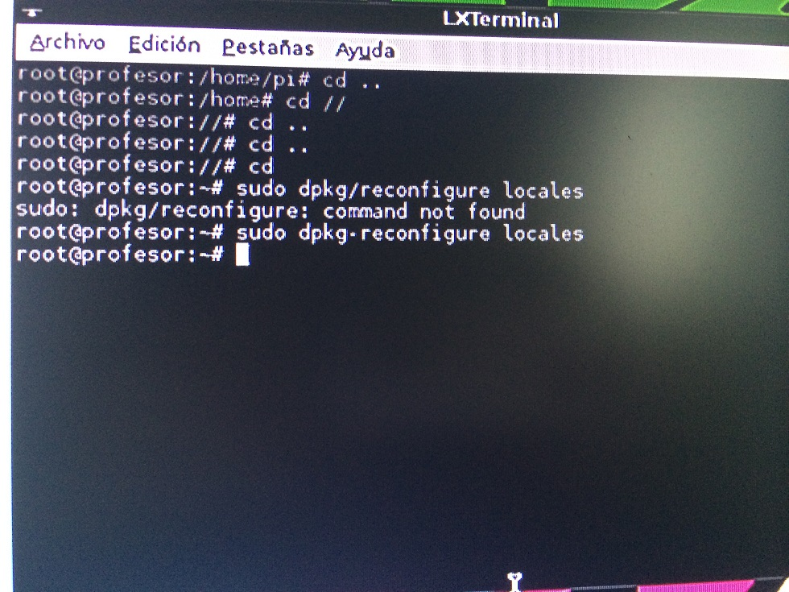
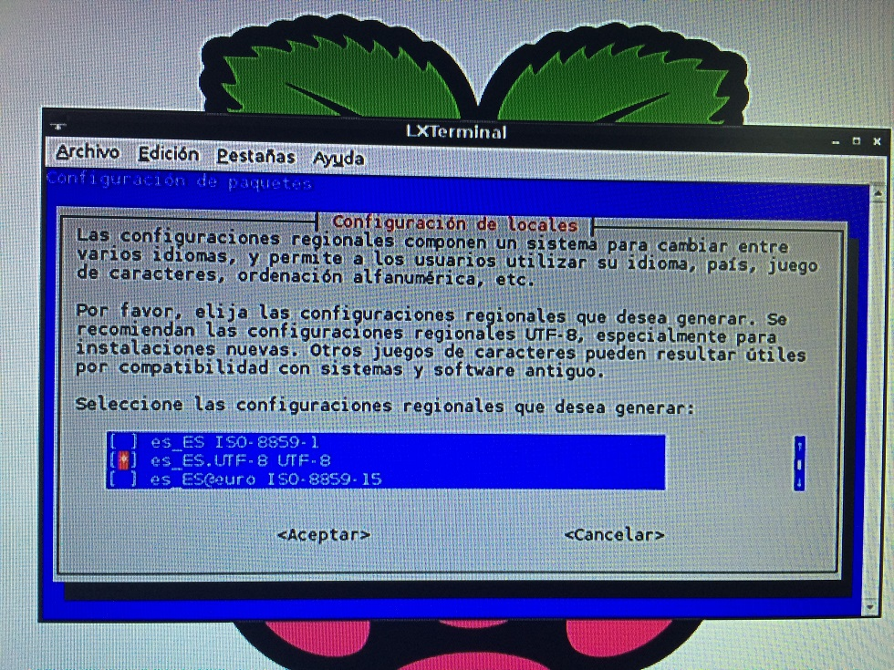
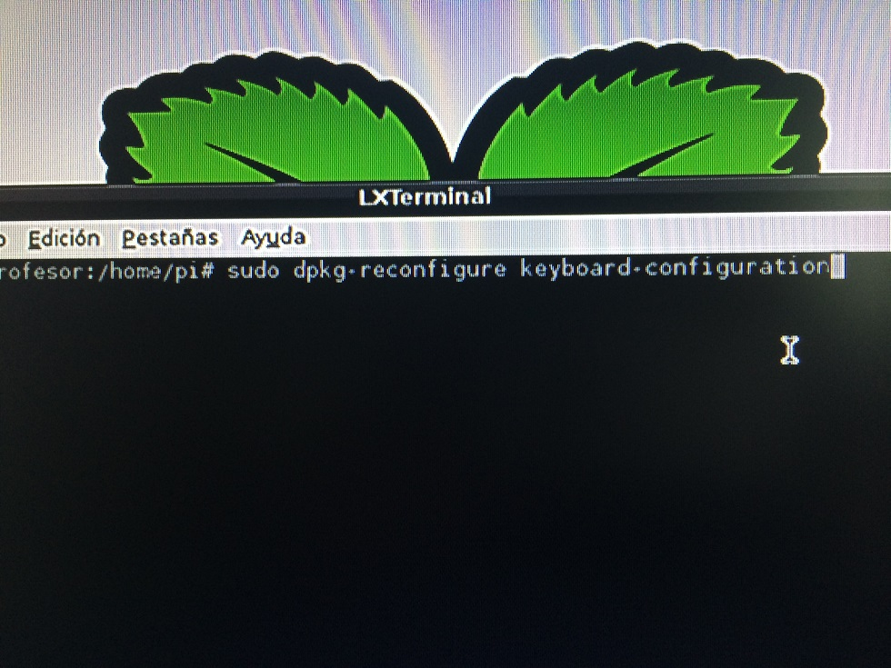
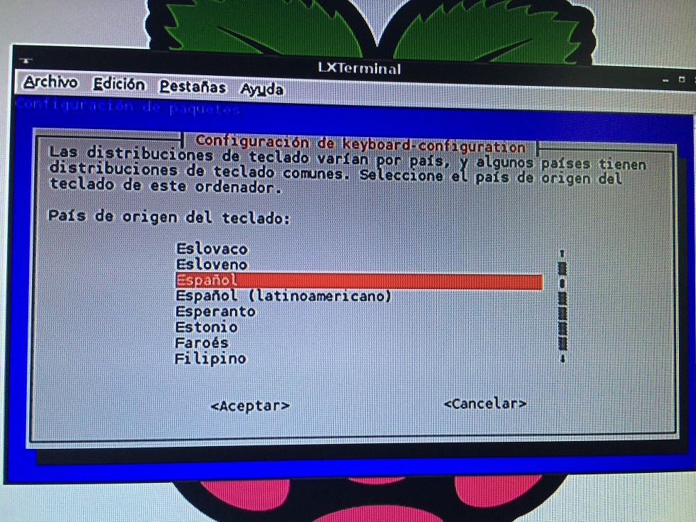
Para dar por finalizado el trabajo, apuntamos la dirección MAC para entregÁrselo al profesor junto con los materiales
que nos cedió al principio.